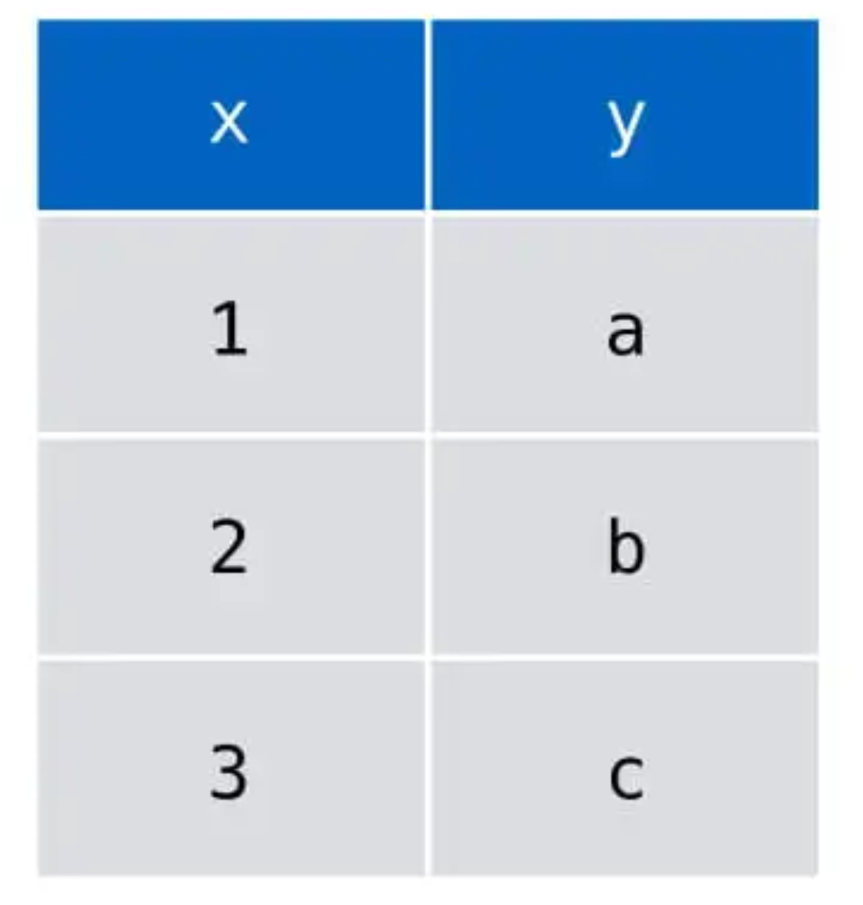
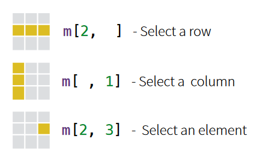
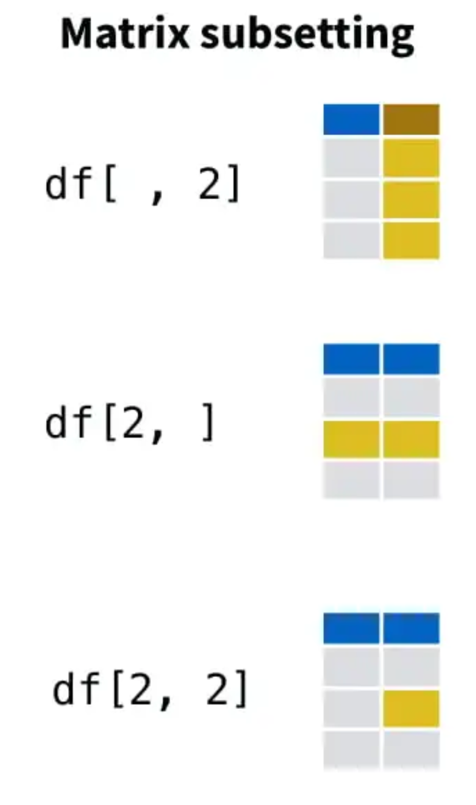
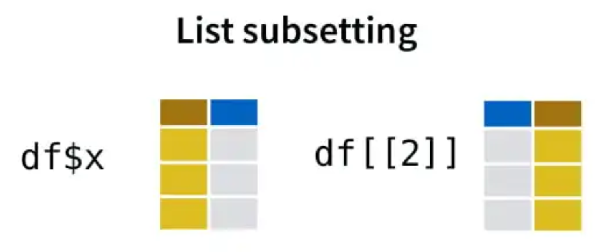
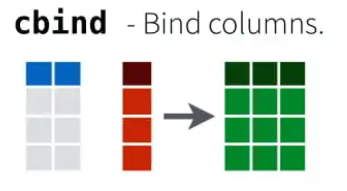
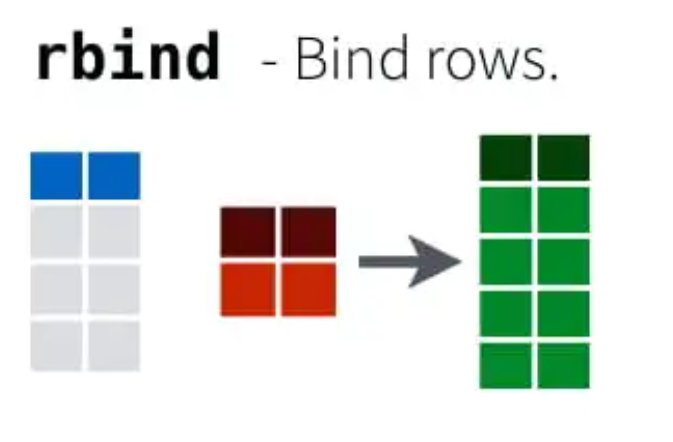

Inhalt
In diesem Tutorial geht es um die Objektklasse, mit welcher du den Großteil der Zeit arbeiten wirst - Data Frames. Ein Data Frame ist jene Struktur, mit welcher Tabellen in R repräsentiert werden können.
Wenn du mit Tabellen in R arbeitest - und das wird oft sein - wird es sich meist um Data Frames - (oder einer speziellen Unterform davon, den Tibbles) handeln.
Dass du den Umgang mit Tabellen in R lernst, ist essentiell, da die meisten Daten auf dieser Welt irgendwie in Tabellen dargestellt werden.
Lernziele
Im laufe des Tutorials wirst du…
- verstehen wie Daten in Tabellen gelistet sind
- verstehen warum Data Frames hilfreich sind
- das Erstellen von Data Frames erlernen
- das Zugreifen auf Variablen in Data Frames erlernen
- das hinzufügen und löschen von Variablen in Data Frames erlernen
Übrigens: Wir verwenden hier für die Eindeutschung “der” Data Frame, die innerliche Begründung lautet: Frame = Rahmen, “der” Rahmen :)
Einführung in Data Frames
Im Tutorial “Vektoren” hast du bereits gelernt, dass Vektoren Variablen darstellen und mehrere Werte enthalten können. Im folgenden lernst du, wie du mehrere Vektoren in einer Tabelle (einem Data Frame) zusammenbringen kannst.
Einmal vorweg ein Beispiel für dich, wie ein Data Frame erstellt wird:
Schaue dir die Vektoren alter und tier im
Codeblock an: Sie enthalten jeweils drei Elemente.
Führe den Code aus, um daraus einen Data Frame zu erstellen und anzuzeigen.
alter <- c(14, 7, 1)
tier <- c("Hund", "Katze", "Maus")
df <- data.frame(alter, tier)
dfIn der ersten Spalte siehst die Variable alter und in
der zweiten Spalte die Variable tier. Die Werte werden wie
bei einem einzelnen Vektor untereinander angezeigt. Die Zeile sagt dir
nun jedoch das Alter für das entsprechende Tier - ist also 1
Beobachtungsobjekt.
Neue Funktion: data.frame() Erstellt aus einzelnen
gleichlangen Vektoren eine Tabelle.
Disclaimer
In der Praxis wirst du zur Dateneingabe ein grafisches Programm wie Excel verwenden, und die fertige Tabelle dann für die Verwendung mit R importieren. Das wirst du im nächsten Tutorial “Datenimport” lernen.
Wenn im Folgenden immer wieder kleine Data Frames aus Vektoren erstellt werden, dient das nur dazu, Beispiele zu konstruieren um den Umgang zu erlernen, aber nicht weil das die übliche Methode ist, wie Daten in R eingegeben werden.
Prinzip
Die Idee eines Data Frames ist es, einen Haufen Vektoren gleicher Länge zu nehmen und damit eine Tabelle zu bauen. Dabei ist jede Spalte ein Vektor. Anders ausgedrückt: jede Spalte ist eine Variable.
Das ist eine wichtige Grundstruktur, die du dir merken solltest, denn es bedeutet, dass für die Spalten einer Tabelle die gleichen Mechanismen greifen wie bei Vektoren. Das kannst du dir für den späteren Abschnitt zur Indizierung in Data Frames im Hinterkopf behalten.
Einen sehr simplen Data Frame mit den Variablen Xund
Y, die jeweils drei Werte enthalten, kannst du dir demnach
so vorstellen:

source: Base R cheat sheet by Mhairi McNeil
Dieses Bild ist Teil des super nützlichen cheat sheets
für Base R (also die Programmiersprache R). Ein Blick darauf lohnt sich,
wenn die Sprache für dich komplett neu ist oder du mal längere Zeit
nicht mit R gearbeitet hast. Dort sind alle wichtigen Funktionen
zusammengefasst und deren Funktionen teilweise grafisch dargestellt.
Cheat sheets gibt es für nahezu jede
Programmiersprache.
Erstellung eines Data Frames
Du kennst jetzt die Funktion data.frame(), um aus deinen
Variablen einen Data Frame zu erstellen. Aber wie genau benutzt du sie?
Das wirst du gleich verstehen.
Namensgebung: Neu = Alt
Wenn du aus bestehenden Variablen einen Data Frame erstellst, solltest du zuerst dafür sorgen, dass die Variablen aussagekräftige, aber kurze Namen in deinem Data Frame erhalten. Du brauchst sie später, um auf deine Daten zuzugreifen.
Eine in R übliche Konvention für Namensgebungs-Situationen ist die
Reihenfolge NEW = OLD.
Bei der Verwendung von data.frame() kommen wir in eine
solche Situation, weil wir während der Erstellung Spaltennamen vergeben
können. Betrachte dazu das folgende Beispiel, wo wir eine Tabelle mit
Daten über eine WG erstellen.
Schon beim Assignment, was ja auch eine Namensgebungs-Situation ist, gilt: Links steht immer der neue Name, rechts immer der alte Name oder Inhalt.
Achte auf die Argumente von data.frame(): Dort gilt das
gleiche Schema. Die “neuen” Spaltennamen stehen jeweils auf der linken
Seite des Gleichheitszeichens, der “alte” Name des bereits vorhandenen
Vektors auf der rechten. Die Argumente (in diesem Fall die Vektoren)
sind für eine gute Lesbarkeit auf eigene Zeilen aufgeteilt.
# Mitbewohnis in einer WG
# Schema: neu <- alt
x <- c("Amadou", "Mira", "Luisa", "Alex")
y <- c(2000, 2001, 1990, 1995)
z <- 5.23
# 2. Data Frame erstellen und dabei Spalten benennen. Gleiches Schema:
wg <- data.frame(
name = x,
jahrgang = y,
grundpreis = z)
wgDas ist gut zu wissen, denn dieses Schema gilt als Konvention für die meisten Bennennungssituationen in R.
Eine Konvention für Data Frames ist es diesen als df
abzukürzen. Da wir jedoch mehr als einen Data Frame erstellen werden,
wird in diesem Tutorial davon abgewichen. Es steht dir natürlich auch
immer frei, eigene Namen für deine Objekte zu wählen.
Lerntest
Hast du im Tutorial “Vektoren” gut aufgepasst?
Eigentlich hast du eben gelernt, alle Vektoren müssen gleich lang
sein um einen Data Frame zu erstellen. Warum funktioniert es oben
trotzdem, obwohl Vektor z nur Länge 1 hat und nicht
ebenfalls 4?
Indizierung von Data Frames
Der Data Frame WG ist nun erstellt. Um damit auch arbeiten zu können, brauchst du dein Wissen aus dem Tutorial “Indizierung”.
Es gibt 2 wesentliche Arten auf die Daten in dem Data Frame zuzugreifen: Das Indizieren auf Grundlage einer Liste (List-Subsetting) oder auf Grundlage einer Matrix (Matrix-Subsetting).
“Was heißt das jetzt?” - Nun ja, ein Data Frame in R ist sowohl eine
spezielle Art einer Liste als auch einer Matrix. Daher kannst du sowohl
List Subsetting als auch Matrix Subsetting
verwenden.
Fangen wir mit dem Prinzip von Matrizen an.
Die Matrix
Die Matrix ist dir vielleicht noch ein Begriff aus der Filmwelt und hoffentlich auch aus dem Matheunterricht. Simple gesprochen ist sie eine zweidimensionale Datenstruktur mit Spalten und Zeilen. Sie kann Zahlen oder Text enthalten. Aber keine Angst, wir werden hier keine Matrizen multiplizieren oder Gleichungen nach X aufgelösen.
source: Erstellt mit BingAI image creator.
Matrix erstellen
Eine Matrix in R ist eine flexible Datenstruktur, die es dir
ermöglicht, verschiedene Datentypen zu speichern. Sie wird durch den
Befehl matrix() erstellt. Von der Dokumentation (Hilfe)
kannst du erfahren, dass dieser Befehl folgende Argumente ermöglicht:
matrix(data = NA, nrow = 1, ncol = 1)
# unsere bekannten WG-Daten
x <- c("Amadou", "Mira", "Luisa", "Alex")
y <- c(2000, 2001, 1990, 1995)
z <- c(5.23, 5.23, 5.23, 5.23)
# 2. Matrix erstellen und dabei Nummer an Spalten durch die Länge des Vektors(x) vorgeben:
wg_matrix <- matrix(c(x,y,z), nrow = length(x))
wg_matrixZur Veranschaulichung bleiben wir bei dem WG Beispiel. Als Matrix dargestellt bekommen wir den obrigen Output. Vielleicht kommen dir die eckigen Klammern bekannt vor, was meinst du können wir damit machen?
Dann probiere es doch gleich mal aus!
Schau dir die Matrix oben nochmal an und versuche auf den Jahrgang von Luisa zuzugreifen.
# Auf die Matrix zugreifen:# erinnere dich, dass du mit den eckigen Klammern auf die Elemente zugreifen kannst
wg_matrix[x,y] # erstetze x und y durch die entsprechenden Zeilen und Spalten Da die Matrix 2 Dimensionen hat, hat auch die eckige Klammer zwei Positionen, die du für das Zugreifen verwenden kannst. Dabei bezieht sich der erste Wert auf die Zeile und der zweite auf die Spalte.
Merke: Eine Matrix wird durch den Befehl matrix()
erstellt
Auf eine Matrix greifst du wie folgt zu:
matrix[Zeile, Spalte]
Da es visuell leichter zu verstehen ist, auch hier ein kurzer
Ausschnitt aus dem Cheat Sheet.

source:Base R cheat sheet by Mhairi McNeil
Jetzt hast du schon einen ersten Einblick ins Thema Matrizen bekommen. Dieser sollte für unsere Zwecke reichen. Gehen wir also weiter im Programm und schauen uns gemeinsam an, wie wir Listen nutzen können und was das überhaupt ist.
Listen
Eine Liste kann verstanden werden als ein “allgemeiner Vektor”, welcher normale Vektoren enthalten kann - und sogar andere Listen (das wird dann aber schnell sehr unübersichtlich).
Ein ganz zentraler Punkt: Während normale Vektoren atomic sind, also immer nur Daten des gleichen Typs beherbergen können, können Listen gemischte Daten enthalten und Vektoren verschiedener Länge.
Hier ein Beispiel:
# named vector:
named_vec <- c(
aepfel = 10,
birnen = "zwanzig",
pflaumen = 30)
# Liste:
named_li <- list(
aepfel = c(10,20),
birnen = "zwanzig",
pflaumen = 30)
named_vec
named_liDer Vektor (oben in der Ausgabe) kann nur Daten eines einzigen Typs enthalten. Da er den Text “zwanzig” enthält, werden die Zahlen automatisch auch zu Text umgeformt und mit Anführungszeichen umgeben. (Siehe auch Tutorial “Vektoren”).
Die Liste (unten in der Ausgabe) hingegen kann problemlos Text und Zahlen gleichzeitig aufnehmen.
Ein weiterer Vorteil von Listen ist, dass sie auch Elemente unterschiedlicher Länge enthalten darf. Das siehst du beim Vektor ‘aepfel’.
Merke: Listen sind in der Lage Vektoren bzw. Daten unterschiedlicher Länge und unterschiedlicher Typen (character, double, integer, date…) zu fassen.
Listen erstellen
Eine Liste ist dadurch eine sehr flexible Datenstruktur, die es dir ermöglicht, verschiedene Datentypen mit verschieden vielen Einträgen zu speichern.
Du erstellst eine Liste mit dem list() Befehl. Als
Argumente gibts du lediglich deine Variablen nacheinander ein.
x <- c("Amadou", "Mira", "Luisa", "Alex")
y <- c(2000, 2001, 1990, 1995)
z <- 5.23
# zum Vergleich
wg_matrix # unsere matrix
wg_list <- list(x,y,z)
wg_list # unsere ListeDu siehst die Variablen (Spalten) bekommen doppelte eckige Klammern
und die Einträge (Zeilen) einfache eckige Klammern. Wenn wir so auf eine
Variable zugreifen wollen wird es schnell unübersichtlich. Wollen wir
z.B. auf den Jahrgang von Amadou zugreifen wäre das
wg_list[[2]][1].
Probiere es gerne mal aus:
# ersetze die "Spalte" und "Zeile", um das Prinzip zu verstehen
wg_list[[Spalte]][Zeile]Wie gesagt, ist dies etwas mühsam. Listen können jedoch viel mehr!
Sie erlauben die Benutzung eines speziellen Operators zur Indizierung:
Der $- Operator. Er ist speziell für das Indizieren bei
benannten Listen gedacht. Hat eine Tabelle überschriften so können diese
übernommen werden, für unsere Vektoren müssen wir jedoch erneut auf die
explizite Namensgebung zurückgreifen.
Jetzt bist du dran! Erinnerst du dich noch wie die Namensgebung in R funktioniert?
- Füttere die Vektoren
x,yundzin die Liste und gib Ihnen die Namenname,jahrgangundgrundpreis. - lass dir
wg_listeanzeigen
x <- c("Amadou", "Mira", "Luisa", "Alex")
y <- c(2000, 2001, 1990, 1995)
z <- 5.23
wg_liste <- list()wg_liste <- list(
name , # sage R, dass name dem Vektor x entspricht
jahrgang , # sage R, dass jahrgang dem Vektor y entspricht
grundpreis # sage R, dass grundpreis dem Vektor z entspricht
)
# Anzeigen über Nennug des ObjektesIn der Ausgabe solltest du jetzt also sehen, dass sich die
[[1]],[[2]] und [[3]] respektive
in $name, $jahrgang und
$grundpreis gewandelt haben.
Wollen wir jetzt auf einen Eintrag in der Liste zugreifen können wir
dies ganz bequem über den $- Operator, ganz ohne eckige
Klammern. Es verhält sich dann wieder so als wäre es nur ein einzelner
Vektor
wg_liste$name
wg_liste$jahrgang[3]Listen bearbeiten
Aber es kommt noch besser! Wir können neue Variablen auch mit dem
$-Operator ganz einfach zur Liste hinzufügen:
Bei so viel Arbeit, hat sich die WG doch ein paar Balkone verdient. Führe den Code aus und finde heraus, wer bei der Renovierung einen Balkon an sein Zimmer bekommen hat.
wg_liste$balkon <- c(TRUE, TRUE, FALSE, FALSE)
wg_listeJetzt bist du dran! Übe ein bisschen mit den folgenden Aufgaben:
- Füge der Liste die Informationen zu der Zimmergröße der
Mitbewohnenden hinzu. Nutze dafür den Variablennamen
qm. Die Werte darfst du dir gerne selbst aussuchen. - Lass dir den zweiten und dritten Eintrag für die Variable
qmgleichzeitig anzeigen.
wg_liste$qm <- c() # erstelle einen Vektor in der Liste wg mit den Quadratmeterangaben
wg_liste$qm[] # greife auf das 2 und 3 Element des Vektors qm der Liste wg_liste zu wg_liste$qm <- c(33, 15, 10, 20) # erstellt einen neuen Vektor in der Liste wg mit den Quadratmeterangaben
wg_liste$qm[2:3] # greift auf das 2 und 3 Element des Vektors qm der Liste wg_liste zu Fassen wir nochmal zusammen:
Listen erstellst du mit dem Befehl list() Auf Listen
kannst du am besten mit dem Variablennamen und dem
$-Operator zugreifen: liste$variable[Zeilen]
Der Ausdruck verhält sich dann wie ein Vektor.
Damit hast du schon die Grundlage für die Arbeit mit Data Frames gelegt! Jetzt können wir diese Mechaniken im nächsten Kaptiel auf Data Frames übertragen.
Arbeiten mit Data Frames
Eine besondere Art von Liste bzw. Matrix ist der Data Frame. Ein Data Frame organisiert Daten in tabellarischer Form. Das charakterisierende Merkmal ist, dass alle Elemente die gleiche Länge haben müssen, während das für Listen generell nicht so sein muss.
source: Erstellt mit BingAI image creator.
Ein Data Frame hat also nicht die exakt gleiche Funktionalität wie eine Liste und ist auch keine reine Matrix, sondern ist seine ganz eigene Kategorie, die aber auf diesen Konzepten basiert.
Falls du dir noch einmal anschauen möchtest, wie ein Data Frame erstellt wird wechsle zu “Einführung in Data Frames”.
Wir steigen hier jetzt direkt in die Arbeit mit Data Frames ein.
Data Frame Subsetting
Wie du jetzt schon gelernt hast können wir für Data Frames sowohl Matrix- als auch List Subsetting nutzen, um auf unsere Daten zuzugreifen.
Falls du dich fragst, was Subsetting eigentlich heißt:
Subsetting in Data Frames ermöglicht es dir, spezifische Teile deiner
Daten zu extrahieren und mit diesem Teilbereich damit weiter zu rechnen
bzw. in einem neuen Data Frame zu speichern.
Lass es uns doch gemeinsam in den nächsten Schritten ausprobieren.
Matrix Subsetting
Matrix Subsetting behandelt den Data Frame als Matrix, in der jede Spalte als Vektor betrachtet wird. Hierbei werden Zeilen und Spalten durch Indexierung angesprochen.
Diese Art der Indizierung ist besonders praktisch, wenn du spezifische Bereiche des Data Frames benötigst, z. B. bestimmte Zeilen und Spalten.
Beispiel: Nehmen wir wieder unsere WG. Hier wird nochmal der Data
Frame wg_df erstellt indem die Vektoren mit jeweiligem
Namen in den Data Frame Befehl data.frame() eingegeben
werden.
# Beispiel Data Frame
wg_df <- data.frame(
name = c("Amadou", "Mira", "Luisa", "Alex"),
jahrgang = c(2000, 2001, 1990, 1995),
grundpreis = c(5.23, 5.23, 5.23, 5.23),
qm = c(12, 14, 20, 15),
balkon = c(TRUE, FALSE, FALSE, FALSE)
)Jetzt bist du dran!
- Führe zunächst den Code aus, um dir den Data Frame anzeigen zu lassen.
- Nutze nun Matrix Subsetting um auf die
qmAngaben der gesamten WG zuzugreifen - Greife nur auf die
qmvon Mira zu.
# Aufgabe 1
wg_df # Anzeigen des Data Frames# Aufgabe 2
wg_df[] # qm ist das vierte Element der Zeilen
# Aufgabe 3
wg_df[] # Mira ist das zweite Element der Spalten# Aufgabe 2
wg_df[,4] # qm ist das vierte Element der Zeilen
# Aufgabe 3
wg_df[2,4] # Mira ist das zweite Element der SpaltenDas sollte geklappt haben. Aber was wenn unser Data Frame noch viel mehr Elemente hat? Dann wird es schwieriger nachzuvollziehen, an welcher Stelle das Element unserer Wahl liegt. Dafür eignet sich daher das List Subsetting besser.
List Subsetting
Beim List Subsetting wird ein Data Frame als Liste von Vektoren betrachtet. Jede Spalte ist ein Vektor, und der Zugriff auf eine Spalte erfolgt wie bei einer Liste durch Verwendung des $-Operators (oder doppelter eckiger Klammern [[ ]]). Diese Methode ist besonders nützlich, wenn du auf spezifische Variablen bzw. Spalten zugreifen möchtest.
Diese Art der Indizierung ist besonders praktisch, wenn du auf bestimmte Variablen zugreifen möchtest, da es die Lesbarkeit deines Codes erhöht.
Versuch es direkt mal aus, wie können wir mit List Subsetting auf die gleichen Daten zugreifen?
- Führe zunächst den Code aus, um dir den Data Frame anzeigen zu lassen.
- Nutze nun List Subsetting um auf die
qmAngaben der gesamten WG zuzugreifen - Greife nur auf die
qmvon Mira zu.
wg_df # Anzeige des Data Frames# Aufgabe 2
wg_df$qm # der Vektor qm kann durch den $-Operator gewählt werden
# Aufgabe 3
wg_df$qm[2] # Mira ist das zweite Element der SpaltenWas würdest du mit dem jetzigen Wissen über die beiden Indizierungsweisen sagen:
Subsetting Zusammenfassung
Fassen wir nochmal graphisch zusammen, um die Stärken und Schwächen der beiden Subsetting Arten zu verstehen:


source: Base R cheat sheet by Mhairi McNeil
Merke: List Subsetting mit dem $-Operator ist sehr nützlich, um auf Variablen zuzugreifen - was wir die meiste Zeit tun. Matrix Subsetting hingegen kann für gezieltes Ansteuern isbesondere von Zeilen und einzelnen Werten hilfreich sein.
Untersuchen des Data Frames
Es gibt 3 wesentliche Funktionen, um deinen Data Frame zu betrachten.
nrow()ncol()dim()
Was sie dir über den Data Framen sagen, kannst du hier ausprobieren:
wir nuzten wieder den WG-Data Frame, dessen Daten du dir nochmal ausgeben lassen kannst, indem du den Code zunächst ausführst und dann an den Code änderst.
nutze die Funktionen ncol()und dim()
ebenfalls für den Data Frame wg_df.
# Anzeige des Data Frames
wg_df
# nutze nrow()
nrow(wg_df)
# Nutze ncol()
# Nutze dim()# Anzeige des Data Frames
wg_df
# nutze nrow()
nrow(wg_df)
# Nutze ncol()
# Nutze dim()Wenn alles geklappt hat, hast du jetzt rausgefunden: 1) wie viele Zeilen der Data Frame hat 2) wie viele Spalten der Data Frame hat 3) hast dir in einem Vektor Zeilen und Spaltenzahl ausgeben lassen
“Wofür brauchen wir das?” - Wenn wir später mit unseren eigenen Daten arbeiten können wir so schnell sehen, wie viele Versuchspersonen oder Beobachtungen wir erhoben haben und wie viele Variablen wir haben. Wenn du gut aufgepasst hast, kannst du im Quizz dein Wissen testen:
Merke: mit dim() kannst du dir die Dimensionen deines
Data Frames anzeigen lassen
Hinzufügen oder entfernen von Daten
Manchmal möchtest du weitere Variablen (Spalten) oder auch
Beobachtungen (Zeilen) zu einem bestehenden Data Frame hinzufügen. Dafür
gibt es die zwei nützlichen Befehle cbind()n und
rbind().
Was diese tun kannst du aus dieser Abbildung schließen:


source: Base R cheat sheet by Mhairi McNeil
Beide Befehle nehmen die selben Argumente.
cbind(dataframe, variable_to_add)
rbind(dataframe, data_to_add)
Das erste Argument ist der bestehende Data Frame, das zweite die
hinzuzufügende Spalte (cbind) oder Zeile (nrow). Schau es dir doch
einfach im Beispiel einmal an. Denk dran, die Argumente der Funktion
werden durch , getrennt.
Beispiel:
# Nutzung von cbind um die Spalte 'haustier' hinzuzufügen
wg_df <- cbind(wg_df, haustier = c(TRUE, FALSE, TRUE, FALSE))
wg_dfVorsicht! Denk dran, dass Data Frames nur Variablen gleicher Länge aufnehmen können.
Du bist dran!
Die Wg wurde renoviert und hat ein Zimmer mehr zur Verfügung. Bei dem
heutigen Mietmarkt dauert es auch nicht lang und ein neues WG Mitglied
zieht ein. Von der Bewerbung und mittels eurer Unterlagen hast du
folgende Daten die hinzugefügt werden müssen: - Fin, wurde
1992 geboren, hat kein Haustier - das Zimmer
ist 13qm groß und hat einen Balkon - die
Grundmiete ist weiterhin 5.23
Lasse dir wg_df danach anzeigen, um zu überprüfen ob das
neue WG Mitglied da ist.
wg_df <- rbind(wg_df, haustier = c(TRUE, FALSE, TRUE, FALSE))# füge die Informationen in der richtigen Reihenfolge und durch Kommata getrennt ein.
# beachte die " " für Daten des Typs charakter
wg_df <- rbind(wg_df, c("", , , , , ))
wg_df# füge die Informationen in der richtigen Reihenfolge und durch Kommata getrennt ein.
# beachte die " " für Daten des Typs charakter
wg_df <- rbind(wg_df, c("Fin", 1992, 5.23, 13, TRUE, FALSE))
wg_df # Anzeige des neuen data framesHast du es geschafft? Dann kannst du wirklich stolz sein! Das war nicht einfach! 🚀 Damit beherrscht du nun die Grundlagen für das Hantieren mit Data Frames.
Abschlussquizz
Learnings
So hast du heute abgeschnitten:
Zusammenfassung
Du hast gelernt:
- Data Frames: Du hast gelernt, dass Data Frames in R flexible Datenstrukturen sind, die es erlauben, verschiedene Datentypen in tabellenartiger Form zu speichern.
- Erstellung: Die Erstellung von Data Frames mithilfe
des Befehls
data.frame()wurde eingeführt. - Subsetting: Du hast verstanden, dass Data Frames sowohl mit Listen- als auch Matrix-Subsetting-Techniken manipuliert werden können.
- Spalten hinzufügen: Die Funktion
cbind()wird verwendet, um neue Spalten zu einem Data Frame hinzuzufügen. - Zeilen hinzufügen: Die Funktion
rbindwird verwendet, um neue Zeilen zu einem Data Frame hinzuzufügen.
Neue Funktionen
| Funktion | Beschreibung |
|---|---|
data.frame() |
Erstellt einen Data Frame aus einzelnen Vektoren. |
list() |
Erstellt eine Liste |
matrix() |
Erstellt eine Matrix |
nrow(), ncol() |
Gibt die Anzahl der Zeilen bzw. Spalten eines Data Frames zurück. |
dim() |
Gibt die Dimensionen (Anzahl der Zeilen und Spalten) eines Data Frames zurück. |
cbind() |
Fügt neue Spalten zu einem Data Frame hinzu. |
rbind() |
Fügt neue Zeilen zu einem Data Frame hinzu. |
liste$name[Zeile] |
Auswahl von Elementen in einer Liste durch Index oder Namen. |
matrix[Spalte,Zeile] |
Auswahl von Elementen in einer Matrix durch Zeilen und Spaltenindex. |
Credit
Dieses Tutorial wurde (größtenteils) von Marie Klosterkamp sowie in Teilen von Lukas Bruelheide geschrieben. Bei der Erstellung (u.a. der Bilder, Beispielen, Aufgaben und Zusammenfassung) wurde teilweise von ChatGPT und Bing AI gebrauch gemacht.